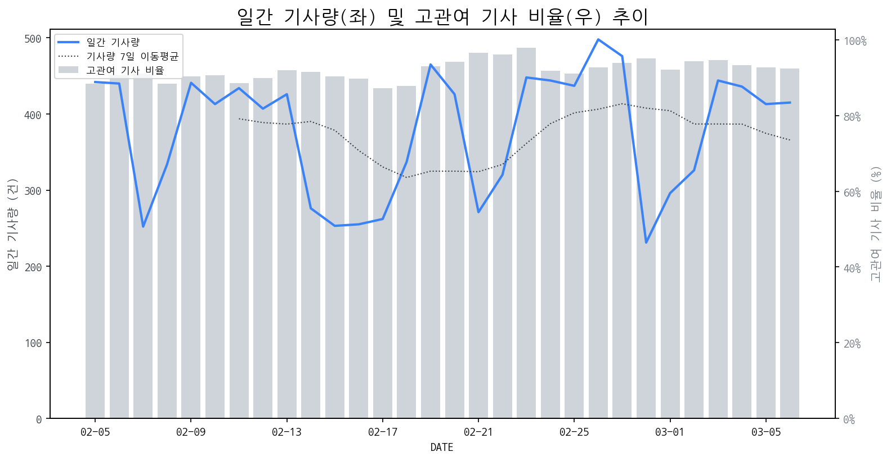

1
시장 활동 지표
기사량 추세 & 이상 징후 탐지
시장의 '전체 기사량'이 평소보다 비정상적으로 급증했는지(Spike)를 차트로 확인하고, LLM이 분석한 급등의 핵심 원인을 파악할 수 있음

고관여 기사란? 산업 연관 키워드로 수집된 기사들 중 디스플레이 키워드에 가중치를 반영하여 도출된 관련성 높은 기사
수집된 기사 수 (2026-03-06)
415
-13% WoW
기사량 변동 수준 (7일 이동평균 대비)
±6.7% 이하
2
오늘의 키워드
급격한 관심 ↑, 주목해야 할 키워드
1
현대모비스
+3.0σ
현대모비스가 농구 경기에서 연패하며 LG에 재차 패배하며 관심이 집중되었습니다.
Related Metrics
금일 언급량: 7, 전일 대비: +7
Interpretation
현대모비스, 스포츠 관련 이슈
Next Step
'현대모비스' 관련 상세 기사 및 경쟁사 반응 모니터링
3
실시간 Risk 키워드
경계해야 할 시그널 탐지
특정 토픽의 부정 감성 점수가 급등할 때 이를 즉시 탐지하고, "근거 기사" 링크를 통해 리스크의 실체를 빠르게 파악할 수 있음
키워드 분석 결과, 오늘은 걱정할 만한 하락 신호가 없습니다. (부정 언급량 변화: +1.5σ 이내)
4
주요 이벤트 모니터링
실시간 산업 동향 파악을 위한 주요 활동
최근 발생한 주요 기업들의 신제품 출시, 투자 등 주요 이벤트를 제공하여 매일 경쟁사 동향을 확인할 수 있음
최근 방위산업, 전쟁, 테러 관련 주식이 '봄날의 햇살'이라는 표현과 함께 급등세를 보이고 있습니다. 퍼스텍, 빅텍, 한일단조 등 관련 기업들이 투자자들의 관심을 받고 있습니다.
Impact
이러한 지정학적 리스크 증가는 방산 및 관련 산업에 대한 투자 심리를 자극하여, 해당 분야의 기업들의 주가 상승에 긍정적인 영향을 줄 수 있습니다.
Next Step
디스플레이 제조 기업은 군용 디스플레이 수요 증가 가능성을 주시하고, 관련 기술 개발 및 파트너십 구축을 고려할 필요가 있습니다.
증권가에서 LG디스플레이에 대해 낙폭이 과대 평가되었다는 분석을 내놓으며 향후 주가 상승 가능성을 제기하고 있습니다. 이는 현재 주가 수준이 기업의 본질적인 가치에 비해 저평가되었다는 판단에 기반합니다.
Impact
LG디스플레이의 주가 상승 가능성은 관련 부품 공급업체 및 기술 경쟁사들의 시장 심리에도 긍정적인 영향을 미칠 수 있습니다.
Next Step
LG디스플레이는 현재 저평가된 시장 인식을 개선하기 위해 수익성 증대 및 미래 성장 동력 확보에 대한 명확한 비전과 실행 계획을 제시해야 합니다.
레노버는 4K 해상도와 240Hz 주사율을 갖춘 QD-OLED 게이밍 모니터를 출시했습니다. 이 제품은 고성능 게이밍 경험을 제공하며, 혁신적인 디스플레이 기술을 적용했습니다.
Impact
이 제품 출시는 고해상도, 고주사율, QD-OLED 기술이 결합된 프리미엄 게이밍 모니터 시장의 경쟁을 심화시키고, 관련 기술 개발 및 생산 능력 확대의 필요성을 증대시킬 것입니다.
Next Step
QD-OLED 패널 공급망 확보 및 고성능 게이밍 모니터 기술력 강화를 통해 경쟁 우위를 확보해야 합니다.
MWC 2026에서 AI가 통신 및 반도체 산업을 중심으로 ICT 산업 전반의 재편을 이끌 것으로 전망되었다. 이는 AI 기술의 발전과 융합이 주요 사업자들의 전략 변화를 야기할 것임을 시사한다.
Impact
AI 기반의 고성능, 저지연 디스플레이 수요 증가와 함께 AI 연산을 효율적으로 지원하는 차세대 디스플레이 기술 개발 경쟁이 심화될 것으로 예상된다.
Next Step
AI 응용 분야 확대를 고려하여 AI 연산 기능 내장, 고해상도 및 빠른 응답 속도를 지원하는 디스플레이 솔루션 개발에 집중해야 한다.
MWC26에서 한국 기업들이 혁신적인 디스플레이 기술을 선보이며 기술력을 과시했다. 이는 차세대 디스플레이 시장에서의 경쟁 구도에 대한 기대감을 높이고 있다.
Impact
이번 MWC26에서의 K-디스플레이 혁신 기술 공개는 폴더블, 롤러블 등 폼팩터 확장 기술과 투명 디스플레이, 마이크로LED 등 첨단 기술의 상용화를 가속화하며 디스플레이 시장의 기술 트렌드를 선도하고 새로운 수요 창출에 기여할 것으로 예상된다.
Next Step
디스플레이 제조 기업은 MWC26에서 공개된 혁신 기술 트렌드를 면밀히 분석하여 자사 기술 개발 로드맵에 반영하고, 차별화된 기술 경쟁력 확보를 위한 R&D 투자를 강화해야 한다.